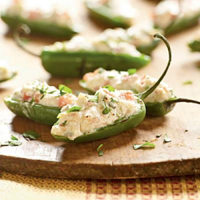

| Grilled Pepper Poppers | |
|---|---|
|  |
1. Prepare grill to medium-high heat.
2. Combine first 7 ingredients in a bowl, stirring well. Spoon about 2 teaspoons cheese mixture into each pepper half. Place pepper halves, cheese side up, on grill rack coated with cooking spray. Grill peppers 5 minutes or until bottoms of peppers are charred and cheese mixture is lightly browned. Carefully place peppers on a serving platter. Sprinkle with cilantro. |